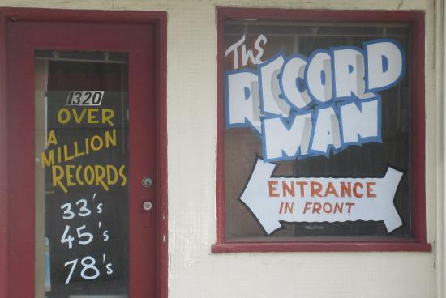

33/3
LP's – 12" 33 1/3 rpm records, have been available commercially since 1948. There are 33 1/3 recordings going back into the early 1940's and the 1930's but these are, for the most part, radio shows (transcriptions). Radio Transcriptions are special pressings made for radio airplay and are generally found in a 16" format.
LP's – 12" 33 1/3 rpm records, have been available commercially since 1948. There are 33 1/3 recordings going back into the early 1940's and the 1930's but these are, for the most part, radio shows (transcriptions). Radio Transcriptions are special pressings made for radio airplay and are generally found in a 16" format. In the early days the LP format was on both ten-inch and twelve-inch records. Although some "labels" pressed 10" LP's through the 1950's the format failed to survive and the 12" LP became the industry standard.
At The Record Man we have hundreds of thousands of 12" LP's. We also have thousands of 16" transcriptions.